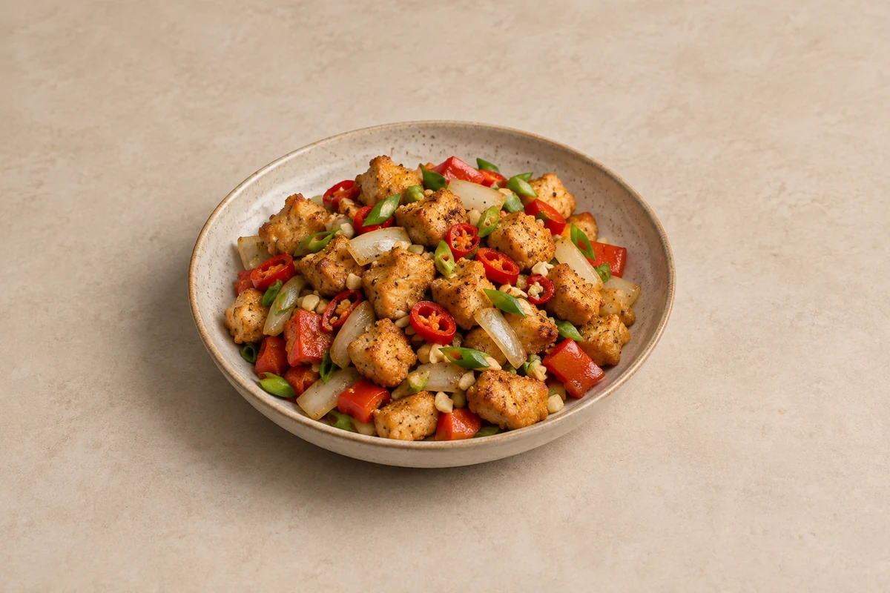

Fakeaway
Salt-and-Pepper Chicken
Crispy chicken breast tossed with peppers, onion, garlic and chilli in a fragrant salt-and-pepper seasoning. Serves 2.
Time to allow: 40 min total
Ingredient quantities update automatically

Ingredients
Chicken
Vegetables
Seasoning
Method
Prepare the seasoning
Mix the salt, white pepper, Chinese five-spice and sugar in a small bowl. Set aside.Coat the chicken
Pat the diced chicken breast dry. Toss with the light soy sauce and beaten egg, then add the cornflour and toss until well coated. Separate any pieces stuck together.Fry the chicken
Pour enough vegetable oil into a deep frying pan for a shallow layer about 1cm deep; the amount depends on pan width. Heat to about 175–180°C. Fry the chicken in small batches for about 5–7 minutes, turning regularly, until crisp, golden and cooked through. Lift onto a wire rack. Check a thick piece is cooked before finishing the batch.Cook the vegetables
In a separate wok or frying pan, heat 1 teaspoon of the frying oil per 2 servings over a medium-high heat. Stir-fry the onion and red pepper for 3–4 minutes until softened slightly but still retaining some bite.Toss with garlic and chilli
Add the garlic, chilli and spring onions and stir-fry for 30–60 seconds. Add the crisp chicken and sprinkle over half the seasoning. Toss, taste, then add more seasoning to suit.Serve immediately
Serve straight away while the coating is crisp. Keep the remaining seasoning to add at the table if wanted.
Tips & leftovers
Storage & leftovers
Best freshly cooked. Cool leftovers, refrigerate covered within 2 hours and use within 48 hours. Keep sauce and cold garnishes separate where possible.
Freezing
Freeze cooled cooked meat separately from sauce and salad for up to 2 months for best quality. The coating will be less crisp after thawing. Keep the vegetable garnish separate; it loses crunch after freezing.
Reheating
Reheat the meat once on a tray in an oven at 180°C / 160°C fan until steaming hot throughout. Turn as needed; add sauce only at the end. Microwaving softens the coating. Add freshly stir-fried vegetables after reheating for better crunch.
Substitutions
Keep chicken breast as written. Yellow or green pepper can replace red pepper. Reduce chilli and white pepper for a milder finish; add seasoning in stages rather than all at once.
Keeping leftovers safe
Cool cooked leftovers in small portions and refrigerate within 2 hours. Keep the fridge at 0–5°C and the freezer around −18°C. Freeze suitable leftovers promptly. Defrost fully in the fridge and use within 24 hours. Reheat only once, until steaming hot all the way through. Follow any shorter use-by or opened-pack instructions; using older cooked ingredients does not restart their storage time.
Food-safety guidance: Food Standards Agency: chilling and freezing · reheating leftovers.